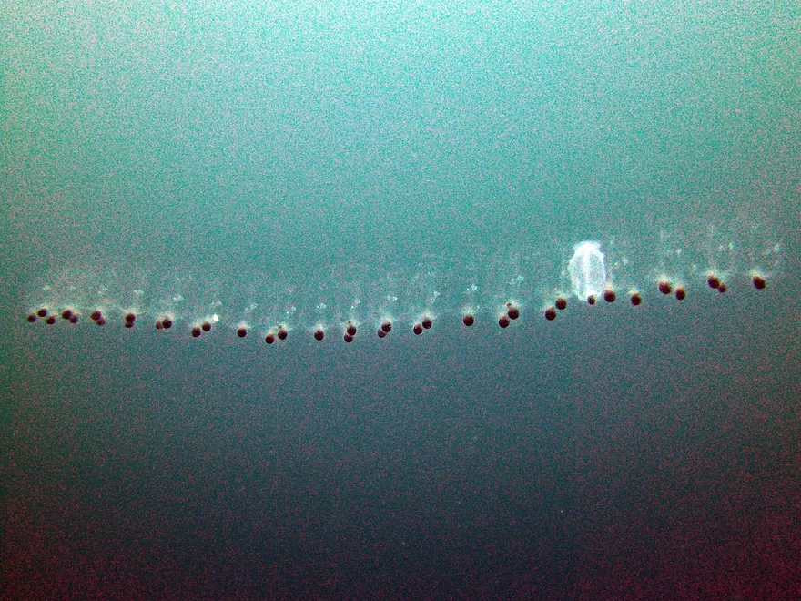
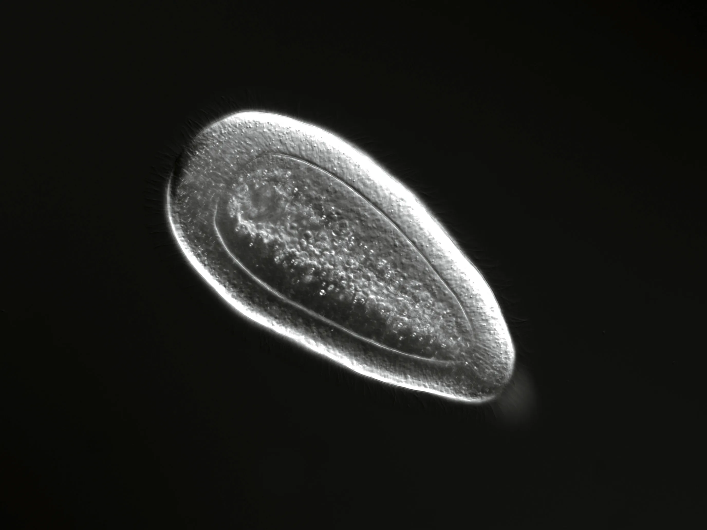
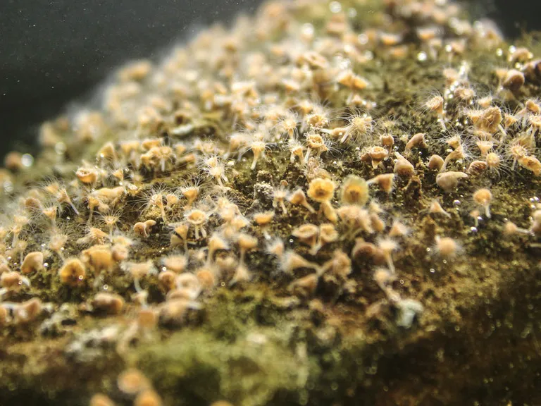
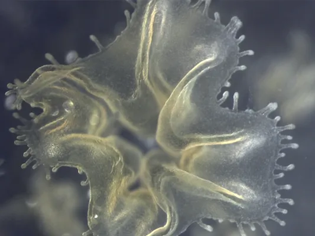
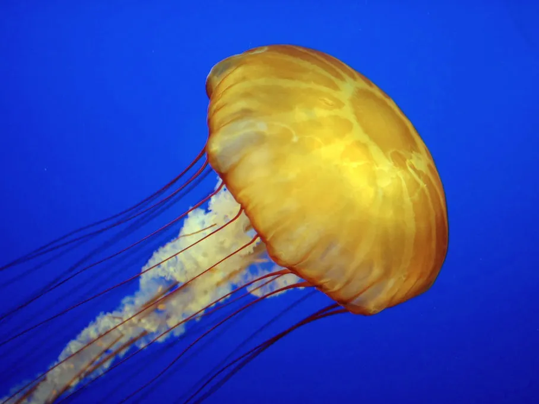

Life Cycle of a Jelly
An overview of how a jellyfish grows from larva to medusa.

Egg Stage
Like a lot of other creatures, jellyfish start as eggs that have been fertilised. Many species of jelly prefer to leave the eggs alone, letting them float to the seabed, whereas others take more care in protecting them, such as keeping them on their body until they have reached their next developmental stage.

Larva Stage
The eggs eventually mature into a planula, a flat, seedlike form with cilia, short membrane protusions, covering it. These larva are able to move due to the rhythmic beating of the cilia, which allows it to seek out somewhere suitable to cling onto and grow.

Polyp Stage
When the right conditions are met, the polyp stage begins. The polyp stays attatched to the surface on one end, meanwhile the other end floats into the sea to be ready to catch food.

Ephyra Stage
Eventually, the polyp begins to segment and detaches ephyrae from it. These free-swimming organisms start off tiny, only a couple millimetres long, but will expand as they continue to live and consume.

Medusa Stage
Finally, the jelly has matured and become an adult medusa, becoming what we typically think of as jellyfish. They are ready to repeat the cycle again.
Remaining Life and Death
The medusa phase of a jelly has the sole purpose of reproducing, so they have no reason to live long lives. With that being said, during the polyp phase, they clone themsleves many times, meaning duplicates can continue to live on after the medusa passes. Truly an extraordinary existence.